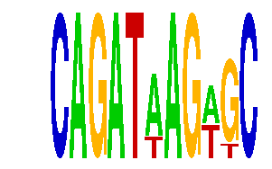

family_9 |
|---|
|  |
| Download PWM |
| Download instances (motifs) |
| Show motif distribution |
Query_ID | Query_Consensus | Subject_Name | Source_DB | Subject_ID | Length | Orientation | Offset | Divergence | Overlap | Subject_Consensus |
|---|
Sequence | Start_position (from start) | Start_position (from end) | Average conservation | Best conservation score | Instance_with_best_CS | Best_Z-score | Instance_with_best_ZS | Strand |
|---|---|---|---|---|---|---|---|---|
| chr2:68295192-68296900 | 1151 | 1162 | 0.998 | 1 | CAGATAAGWKC | 14.270223 | CAGATWAGWGC | 1 |
| chr3:69263000-69264800 | 1722 | 1733 | 0.0130909 | 0.023 | CAGATWAGWGC | 14.270223 | CAGATWAGWGC | -1 |
| chr4:57591900-57593700 | 941 | 952 | 0.00309091 | 0.028 | CAGATWAGWGC | 14.270223 | CAGATAAGWKC | 1 |
| chr4:120159400-120160708 | 706 | 717 | 0.00109091 | 0.004 | CAGATWAGWGC | 14.270223 | CAGATAAGWKC | 1 |
| chr15:27669300-27670863 | 1231 | 1242 | 0.000363636 | 0.002 | CAGATWAGWGC | 14.270223 | CAGATAAGWKC | 1 |
| chr7:83555100-83556290 | 93 | 104 | 0.213273 | 0.388 | CAGATAAGWKC | 14.270223 | CAGATWAGWGC | -1 |
| chr2:172316021-172317021 | 789 | 800 | 0.247 | 0.278 | CAGATWAGWGC | 14.270223 | CAGATAAGWKC | 1 |
| chr8:59955900-59957800 | 81 | 92 | 0.00854545 | 0.014 | CAGATAAGWKC | 14.270223 | CAGATWAGWGC | -1 |
| chr2:49926100-49928200 | 1652 | 1663 | 0.00272727 | 0.008 | CAGATWAGWGC | 14.270223 | CAGATAAGWKC | 1 |
| chr11:65448367-65449600 | 707 | 718 | 0.999727 | 1 | CAGATAAGWKC | 14.270223 | CAGATAAGWKC | 1 |
| chr6:97201871-97203700 | 1348 | 1359 | 0.735273 | 1 | CAGATAAGWKC | 14.270223 | CAGATWAGWGC | -1 |
| chr5:93251500-93254600 | 2665 | 2676 | 0.0114545 | 0.065 | CAGATWAGWGC | 14.270223 | CAGATWAGWGC | -1 |
| chr9:110271600-110273100 | 927 | 938 | 0.000727273 | 0.002 | CAGATWAGWGC | 14.270223 | CAGATWAGWGC | -1 |
| chr6:32587132-32588132 | 749 | 760 | 0.987909 | 1 | CAGATAAGWKC | 14.270223 | CAGATAAGWKC | 1 |
| chr19:21932800-21935100 | 1150 | 1161 | 0.00445455 | 0.007 | CAGATAAGWKC | 14.270223 | CAGATWAGWGC | 1 |
| chr18:44964000-44965060 | 635 | 646 | 0.000727273 | 0.002 | CAGATAAGWKC | 14.270223 | CAGATAAGWKC | -1 |
| chr6:141489000-141490009 | 934 | 945 | 0.00681818 | 0.016 | CAGATWAGWGC | 14.270223 | CAGATWAGWGC | 1 |
| chr13:101676000-101677007 | 126 | 137 | 9.09091e-05 | 0.001 | CAGATWAGWGC | 14.270223 | CAGATAAGWKC | 1 |